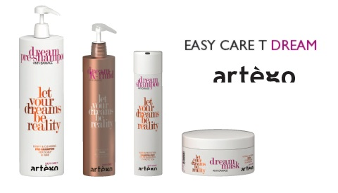

HAIR TREATMENTS
OLAPLEX

Olaplex, a magical miracle that will save even the most damaged hair. Regenerates and binds disulphide bridges, restoring the natural structure to the hair. The hair is made of keratin chains that provide a permanent hair structure.
These chains are connected by the said disulfide bridges, which are subjected to numerous breaks every day through coloring treatments, as well as during everyday stylization such as drying, straightening and even combing.
Olaplex is the only product on the market that is able to REBUILD the broken hair structure. It is a permanent procedure until the hair is damaged again by chemical and mechanical treatments.
KERATIN HAIR STRAIGHTENING
Keratin hair straightening is not only about straightening hair but also regenerating damaged hair. Keratin is naturally produced in the hair follicles, it is the main building material of the hair shaft, called the hair's cortex. The keratin fibers are interconnected with crosslinked sulphide bonds, so the hair is elastic and elastic. Keratin also forms part of the outer coat of the hair to provide the hair with shine and resistance. Its lack leads, among others for the opening of hair scales and split ends.
When our hair becomes dull, brittle, excessively falls out - it may mean that they lack this ingredient. The reasons for losing keratin are many: atmospheric conditions, UV radiation, hair coloring procedures, as well as everyday stylization. The keratin treatment is recommended for anyone who has dry, brittle, damaged or dull hair, often difficult to comb it with, unnaturally inflated. You do not need to mention how important it is to care for the good condition of the hair. Keratin will be the perfect solution here, but OLAPLEX, which is popular recently, which effectively protects our hair from the effects of coloring, is also no less effective.
DREAM REPAIR
The DREAM REPAIR service allows you to get a stunning effect, which is the deep reconstruction of sensitized hair with 4 products:
- Shampoo with KERATIN
- Fluid K
- Regenerating mask
- Regenerating ampoules (k-lotion)
These products actually regenerate the hair fiber, so they have gained recognition not only among stylists who use them in their work, but also clients who have tried them. Positive reaction to these products has motivated art laboratories to further research and develop the service in order to increase its effectiveness and achieve a lasting effect. In this way, we have developed the fifth stage of the service, which consists in applying a restorative preparation (k-lotion).
Liquid hydrolysed creatine rebuilds damaged hair fibers. While the cysteine arrives inside the cortex, new disulfide bridges are formed between the cysteine molecules which have been processed and this process strengthens the general structure of the hair.